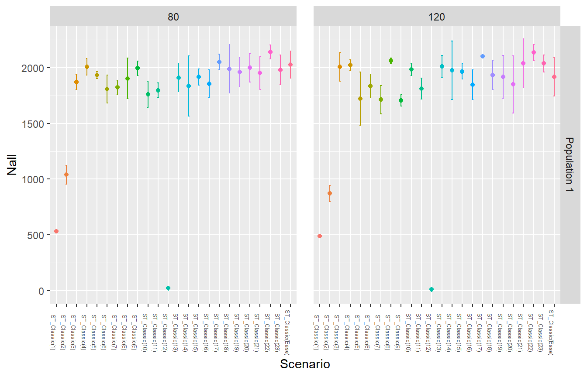
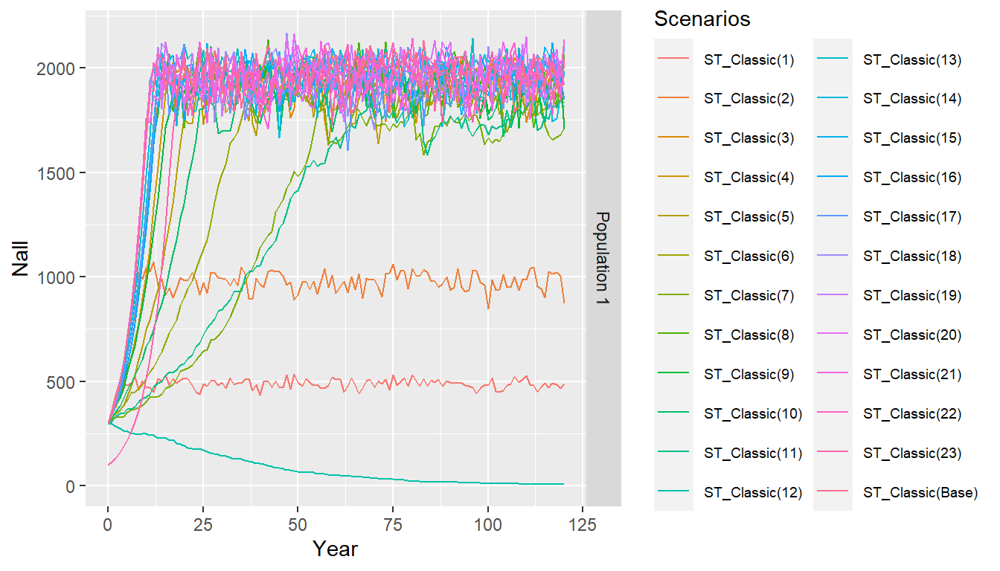
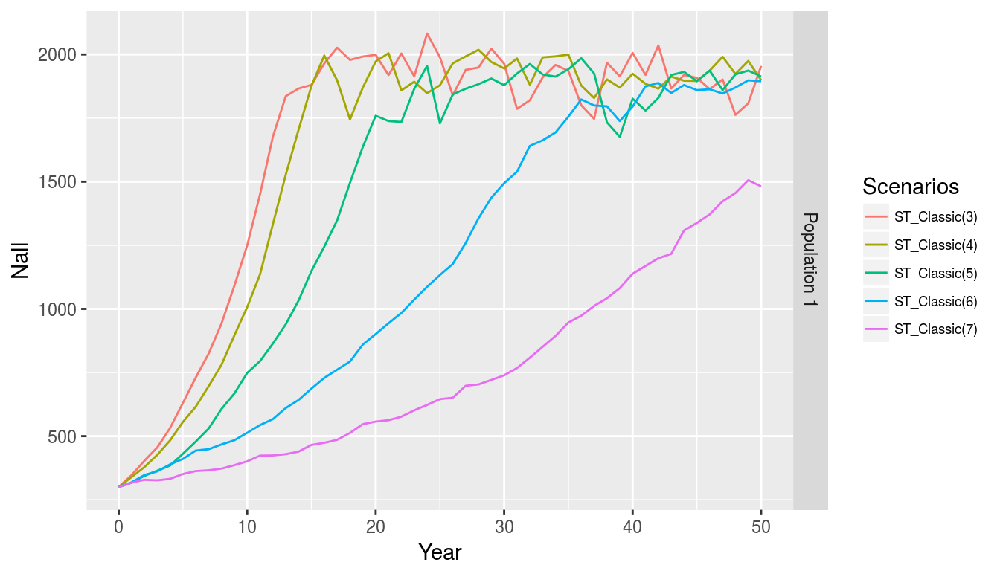
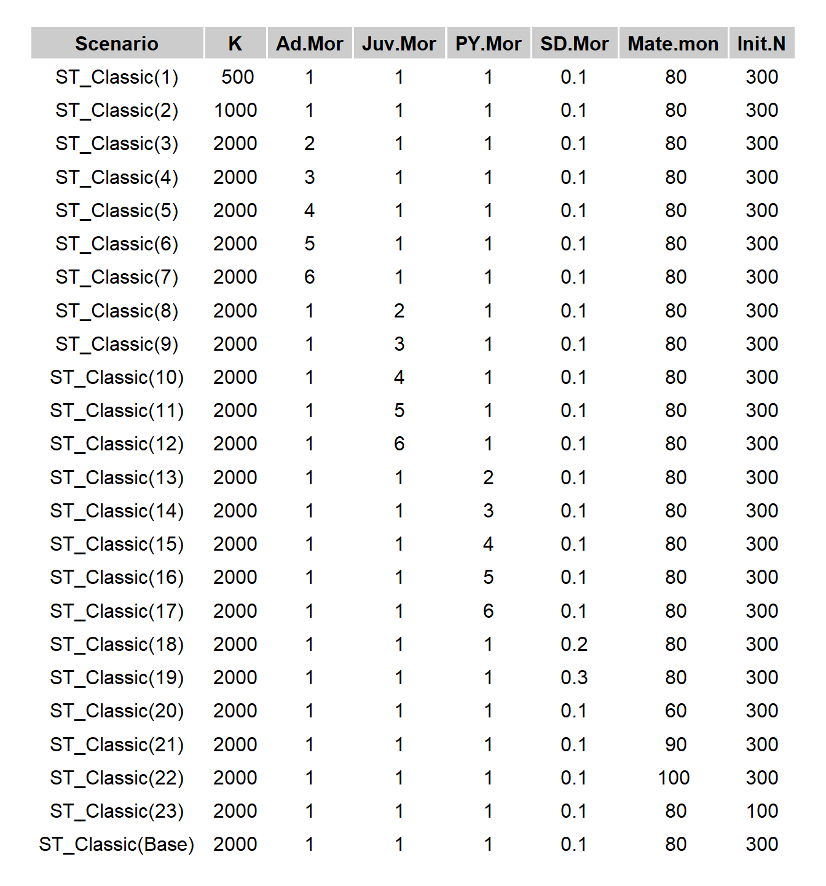
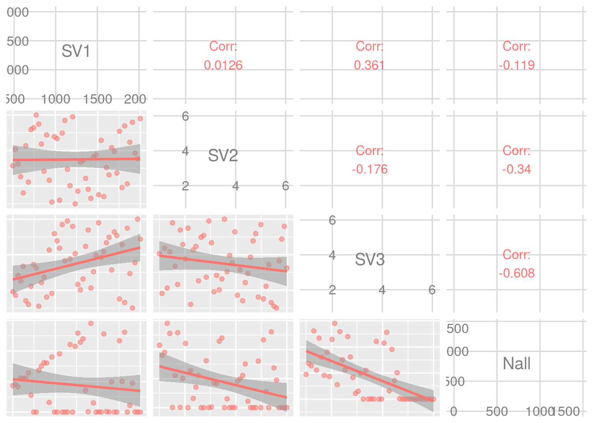
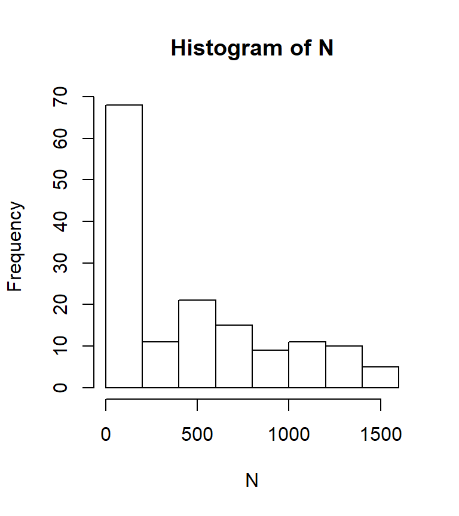
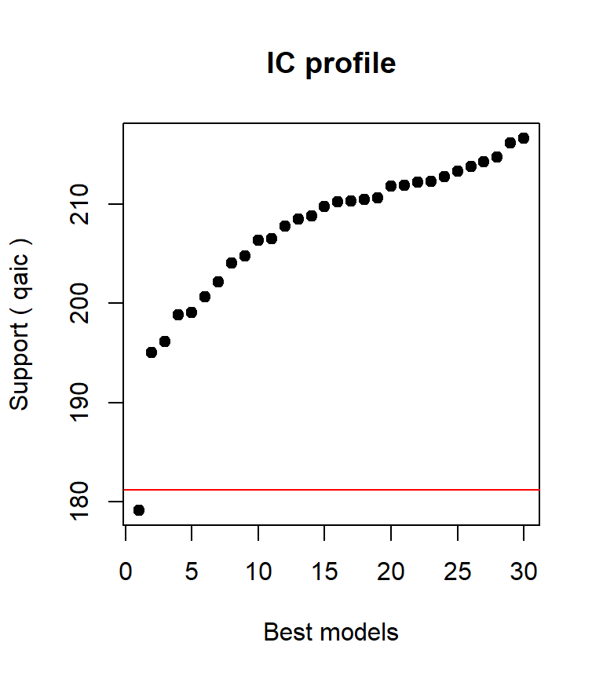
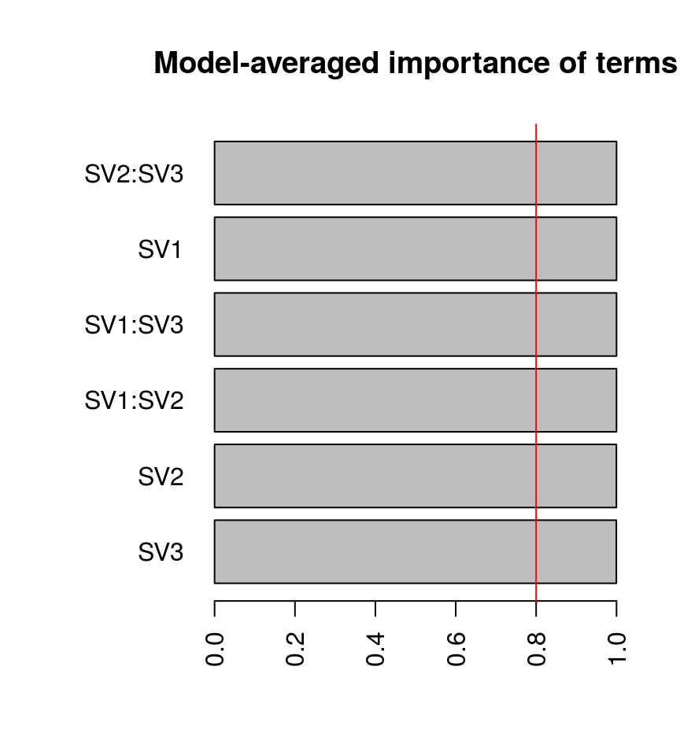

vignettes/vortexRguide.Rmd
vortexRguide.RmdvortexR is an R package that automates common tasks carried out on outputs of population viability analysis (PVA) that were generated with the software Vortex (Lacy & Pollak 2013), including collating Vortex output files, generating plots, conducting basic analysis (e.g. pairwise comparisons of scenarios) and more advanced statistics such as fitting a regression model to investigate the main and the interaction effects of the variables of interest. We call this process post-Vortex simulation analysis (PVSA). The user enters minimal information using arguments in R functions. In some instances, vortexR will behave differently depending on the data that are fed in. Function-specific details are provided in the following sections of the manual.
Note This section repeats the relatively terse installation instructions from the README in more detail and is aimed at beginner level R users.
vortexR requires R v3.1.3 (or later versions) and, while it may work on previous R versions, this has not been tested and the user is strongly recommended to use v3.1.3 or greater. If you are using Windows and need to check or update your version of R (and installed packages), you can easily do that following the instructions in this webpage. Similarly, vortexR was developed to be compatible with Vortex v10 (Lacy & Pollak 2013). Formatting of the outputs is slightly different in Vortex v10 compared to previous versions, which may cause issues. Some functions may adequately process outputs from previous versions, but it is the responsibility of the user to make sure the correctness of the results.
If you are at your first experiences with R, and have not installed it yet, download the latest version from r-project.org for your operating system. While there is no strict requirement to do so, we find the free RStudio IDE (rstudio.com) very handy. It will be very easy to keep clean and then capture your sequence of commands, including possible data manipulations, so that you can return to it later.
You can install the latest stable release of vortexR from CRAN using:
install.packages("vortexR")To install the dev version of the package from version control you need to have installed the R package devtools with install.packages("devtools").
Installations on Windows require Rtools to use devtools.
From within R (or RStudio), vortexR can be installed from the github repository with the command:
library(devtools, quietly=TRUE)
devtools::install_github("carlopacioni/vortexR")If you want to be able to access the vignette, you have to use:
devtools::install_github("carlopacioni/vortexR", build_vignette=TRUE)
but this requires some setting up (e.g. installing Pandoc and MikTex on Windows).
If you don’t use the option build_vignette=TRUE, help documents may not be available from within R. In these cases, download the PDF of the package manual (you must have got the user’s guide already if you are reading this!). Most of the time you use a double question marks to access documentation (e.g. ??vortexR). However, on some platforms, this may not work even if you used build_vignette=TRUE.
vortexR makes heavy use of several R packages. Typically, these packages are installed when you install vortexR.
If you are using Windows, you may have problems installing and loading the glmulti package and/or rJava. This is most likely because you do not have Java installed or are not using the same version as R. In other words, if you are using a 64 bit version of R, you also have to have installed a 64 bit version of Java. Note that if you have Java installed and use the Java website to check whether you have an up to date version of Java, it will report it as ‘up-to-date’ if you have the latest version of Java, but will not check whether it is a 32 or 64 bit. The easiest may be to go to ‘control panel –> Program and Feature and check whether Java is installed. If you have a 64 bit version of Java it will have a ’64-bit’ next to it in brackets. If R does not manage to install rJava, it won’t install also another required package: glmulti.
R stores the data in objects (vectors, data.frames, lists, etc.) and you will be hearing these names a lot throughout this manual. If you are unsure what these are, or need any help to get around R and RStudio, there are plenty of resources on line. A good point where to start can be reading paragraph 1, 2, and 6 of A very (short) intro to R.
Many objects generated by vortexR are data.table (M Dowle et al. 2014). Data.tables are enhanced data.frames and make several operations much faster. You do not need to use the data.table package (if the package is not loaded, R will handle these objects effectively as data.frames), but after the initial learning curve, there may be some benefits when manipulating large datasets. If you want to find out whether an object is a data.table or a data.frame, you can use: class(object_name).
Whatever object you create (or load) in R will be stored in your computer’s physical memory, so these can’t be larger than your computer’s memory. Keep in mind this point if you run very long simulations, with lots of iterations and many populations because these will result in large Vortex output files.
First of all, when using vortexR, you can access quick help files by typing ?function_name where function_name is the name of the function you want information for. So, if you don’t really want to read this vignette and want to go off and try this package ‘empirically’, you are welcome to do so. You can always come back here if something doesn’t make sense to you. If you would rather like to gather more information about the package, you are welcome to keep on reading.
We generally refer to Vortex output files by identifying their extensions (e.g. .yr; .dat; .stdat etc.), with the only exception that we may refer to the .yr files as “census” files (as for Vortex documentations). If you are unfamiliar with Vortex output, please refer to the Vortex manual to clarify the data that are reported in each file type (by the way, throughout this manual, when we say ‘Vortex’ we are referring to Vortex v10 (Lacy & Pollak 2013). We use vortexR to refer to the R package, don’t get confused!).
The remainder of this manual is divided into several parts:
The first (vortexR components and workflow) gives a quick overview of vortexR.
A quick run down simply provides a quick overview of the possible workflow in vortexR going through some worked exercises. If you are reading this document because you are trying to figure out whether it is worthwhile to install this package and try to use it, these two sections are what you want to read.
The Detailed description describes each of the functions and their arguments. It is organised in three sub-sections (Data handling, Data visualisation, and Data analysis), grouping vortexR functions by their functionalities.
If you have already read the supplementary material of our paper presenting vortexR, you can read these sections to gain a deeper understanding of vortexR’s inner workings.
When you install vortexR a few files are also copied that can be used to run the example presented here and in the package documentation.
Pacioni et al. (2017) developed a baseline PVA model for the woylie (Bettongia penicillata). Then they conducted a sensitivity analysis by varying the carrying capacity, the mortality rates for each age class (by multiplying them by a factor from 2 to 6), the standard deviation of these rates (expressed as a proportion of the mean, range 0.1-0.3), the mate monopolization and the initial population size. Then they looked at the individual impact of each of these parameters (in what we called a classic approach where each parameter is modified, one at the time) as well as at their interaction. For the latter, they needed to vary these parameters concurrently, and they used the ST module in Vortex with a Latin Hypercube Sampling.
When vortexR is installed, a folder (named pacioni) is created where several Vortex outputs from the project described above are copied. The project file that was used to generate them is also contained in the folder. Running the following line will locate the path where these files are contained.
library(vortexRdata) pac.dir
Note that the data for Pacioni et al. (2017) are just a subset of the original (only three runs for 120 years, and only for a subset of scenarios), so your results do not match the ones reported in the original publication.
Campbell et al (2015) investigated the cost-benefit ratios of different control levels (scenarios ‘control_09’, ‘control_11’, ‘control_D09’), with or without the inclusion of new technology (scenarios ending with the suffix ‘Tech’) for the starling (Sturnus vulgaris) in Western Australia. They also evaluated whether the variation of the geographical extent of the application of control measures would alter the cost-benefit ratio of the control program (scenarios ending with the suffix ‘Border’ and ‘SC’). Lastly, they evaluated whether the cyclical application of intense control (‘Major Reduction’), would be more cost-effective than sustaining a constant level of investment. The latter component was modelled with a ST module in Vortex, while the previous were developed using the standard Vortex interface.
vortexR and its manual are distributed free of charge under the GPL-3 licence. We only ask you to please cite the following paper if you use vortexR for your work. If you customise a vortexR script to suit your specific needs, we would appreciate if you can still cite vortexR’s main reference stating something like: “we used a customised version of the script vortexR-script-name (Pacioni and Mayer, 2017)”.
Pacioni C, and Mayer F. 2017. VortexR: an R package for post Vortex simulation analysis. Methods in Ecology and Evolution.
Please note that no commercial use of any part of vortexR is allowed.
While all reasonable efforts have been made to ensure accuracy of vortexR calculations and the text of this manual, no responsibility is taken for unintentional errors or problems that may be encountered by vortexR users.
Please report possible bugs, unexpected behaviour, suggestions and feature requests here. Constructive feedback can be sent to carlopacioni at gmail dot com.
Vortex v10 is an incredibly versatile tool that is used by ecologists and geneticists to explore a large number of ecological and genetic questions. It is very difficult to predict what analytical approach Vortex users may want to undertake as it will be highly influenced by how the simulations were set up and the questions been tackled. With the release of Vortex v10, users can easily develop a large number of scenarios to explore the effects of the factors being studied as well as their interactions. This is particularly true when the user takes advantage of the new Sensitivity Test module (ST), which can automate the creation and executions of hundreds of scenarios. Therefore, an equivalent automation of the post-simulation analytical steps is also required as it may become quickly unfeasible to manually access and analyse such a large number of files and data. We developed a set of functions that execute operations on various Vortex outputs. We believe that these tasks will be of common utility for Vortex users’ community; however it is the user’s responsibility to evaluate their suitability.
We describe here a possible workflow, and present below a worked example of an analysis roughly following this workflow. Once the user has run the simulations in Vortex, there will be a collection of output files in a “VOutput” folder. A first step may be to collate the data files that are of interest into one database, so that data can be easily accessed by R or other statistical or graphic software. Different data types will require different vortexR functions. For example, with the function collate_dat the user can collate together all the .dat or .stdat files (which contain the mean parameter values across iterations) from a specific project (and scenario in case of the .stdat files). Additional Vortex output files that can be collated together are the .yr and the .run files from a ST run (using collate_yr and collate_run respectively). Secondly, the user may want to generate a number of plots to visualise general trends in the simulations and inspect whether the models behaved as expected. If everything looks OK the user may move onto the analysis of the data. pairwise will conduct pairwise comparisons (details on the statistical aspects are provided below) between all the scenarios imported into vortexR against a baseline scenario that will be automatically identified for a ST run (using the suffix appended by Vortex, ‘Base’) or specified by the user for a normal (non-ST) collection of scenarios. Complementary, the user may want to fit a regression model to evaluate interaction effects in addition to the main effects of the variable being investigated (fit_regression). Once the user has an idea of the important aspects of the analysis, he or she may select some of the previously generated plots and modify them to comply with the formatting style required for publication or use them in other documents.
Collaterally, there are a number of functions to conduct calculations (e.g. calculation of effective population size), calculate the probability of extinction, the recovery rate (Pacioni et al 2017) or further data handling that are described in more detail below.
OK, you have set up your Vortex project and have been staring at the screen watching the progress of your simulations. Finally Vortex is done and you wonder: now what? You may want to quickly check whether the animals you wanted to be translocated were actually moved, or the effect of altering the mortality rates as you set them up in you ST module etc.
We will walk you through this exact process using the example data described above.
First, we load vortexR. Then, running the following code will read the data from all .stdat files of the Vortex project and consolidate them in one data.frame. Because a Sensitivity Test module (ST) was used to generate the outputs, also the name of the ST scenario needs to be indicated. The consolidated dataset is stored in the object woylie.st.classic and the first five rows and fist five columns are printed so you can have an idea of what happened. Note that default behaviour from vortexR is to save the results to disk in two formats, as a text file and as a R object (.RData) – plots are saved in .RData and PDF format – however, we disabled this feature with save2Disk=FALSE.
library(vortexR)
## Registered S3 method overwritten by 'GGally':
## method from
## +.gg ggplot2woylie.st.classic
## scen.name pop.name Year PExtant SE.PExtant.
## 1 ST_Classic(1) Population 1 0 1 0
## 2 ST_Classic(1) Population 1 1 1 0
## 3 ST_Classic(1) Population 1 2 1 0
## 4 ST_Classic(1) Population 1 3 1 0
## 5 ST_Classic(1) Population 1 4 1 0As you can see, woylie.st.classic is a congregated database of mean parameter values for each scenario run in the ST module ‘ST_Classic’ (in this case, 23 scenarios plus the baseline). All this may not be particularly meaningful to you right now, but with your own models, you will be familiar with the modelling settings and different scenarios and (hopefully) it should be easier to read and interpret these data.
OK, now you have the data ready and you want to know what changed in the demography of the simulated population between year 80 and 120. So, following from above, you run:
dot

As you can see, these are dot plots of mean values with standard deviations for specific years (in this case 80 and 120). Had you had more than one population, the page would have been divided in rows and plots for each population would have been on different rows. Parameter values are on the Y-axis and scenarios are on the X-axis. Note that the input is the data.frame we collated before with collate_dat and how parameters are identified in the function call (e.g. params="Nall") exactly how they are output by Vortex. You probably have noted that the simulated population goes extinct in Scenario 12, something terrible must be happening there… hang in there we will tell you what later…
Now you got curious to see what actually happens throughout the whole simulation:
lineplot.st.classic

Here you go, changes of population size through time are now plotted. Clearly this plot is a mess as it is not very legible with so many scenarios. However, note that this can still be useful to give an overview and that getting this from within Vortex would have required lots of clicking (especially if you have many populations and you want to plot each of them separately rather than the metapopulation. That being said, you are not happy yet, and decide to focus on the first 50 years of the simulation and include in a second plot only scenarios where the adult mortality is different from the baseline scenario (of course you don’t know which variables in this Vortex project control the mortality rates, but it is safe to assume that you’d know this in your own project, so for now just trust us on this).
Likely, it is very easy to subset a data.frame based on parameter values or specific scenarios. To demonstrate this point, we include in the second plot only scenarios where the adult mortality (which is codified in the Vortex project as state variable “SV2”) is different from the baseline scenarios. Note how the call limits the year to be plotted to 50 with the argument yrmid .
lineMidPlot.st.classic 1, ],
project="Pacioni_et_al", scenario="ST_Classic",
yrmid=50, params="Nall", save2disk=FALSE)
Before you dive deep into further data analysis, you may want to check a few other things to make sure everything was the way you wanted it to be. Running the following code will give you access to the ‘census’ data (and store the result in a list called yr.st.classic).
yr.st.classic
collate_yr generates a list with two elements (which are both data.table): we can inspect the first few rows and columns of the first element of the list with:
yr.st.classic[[1]][1:5, 1:8, with=FALSE]
## Scenario Iteration Year Npop1 AMpop1 AFpop1 Subadultspop1 Juvpop1
## 1: ST_Classic(1) 1 0 300 97 117 24 62
## 2: ST_Classic(1) 2 0 300 97 117 24 62
## 3: ST_Classic(1) 3 0 300 97 117 24 62
## 4: ST_Classic(1) 1 1 361 116 137 28 80
## 5: ST_Classic(1) 2 1 357 115 136 29 77The second element of the list includes the same data, but these are averaged across iterations. This is the dataset to look into in case you are interested in the mean number of animals that moved between populations (e.g. migration or translocations), or subclasses of individuals (e.g. by gender or age):
yr.st.classic[[2]][1:5, 1:7, with=FALSE]
## Scenario Year Npop1 AMpop1 AFpop1 Subadultspop1 Juvpop1
## 1: ST_Classic(1) 0 300.0000 97.0000 117.0000 24.00000 62.00000
## 2: ST_Classic(1) 1 362.0000 117.0000 138.0000 28.66667 78.33333
## 3: ST_Classic(1) 2 433.6667 141.0000 172.3333 34.00000 86.33333
## 4: ST_Classic(1) 3 500.6667 165.0000 200.0000 35.66667 100.00000
## 5: ST_Classic(1) 4 481.3333 166.6667 202.6667 40.66667 71.33333Pacioni et al (2017) defined the recovery rate as the mean growth rate over a period of five years (20 Vortex time-units) and used this as indication of the capacity of the population to recover from low density. You can calculate this parameter with the function rRec starting from the data generated with the function collate_dat. The output is a table of the mean recovery rate calculated between yr0 and yrt. This function also conducts statistical pairwise comparisons with a baseline scenario (the ‘Base’ scenario if the simulations were run with a ST module, or the scenario indicated in the argument scenario) using the Strictly Standardised Mean Differece — SSMD (if you want to have more details on this statistic, just scroll down to the detailed description of pairwise where we explain it). In case this may be useful for you, here is a demonstration of how it works:
rec_rate
## Scenario rRec SD SSMD pvalues
## 1: ST_Classic(1) 0.105950 0.073135 -0.37691360 0.3531189054
## 2: ST_Classic(2) 0.122285 0.053840 -0.22659213 0.4103704557
## 3: ST_Classic(3) 0.120245 0.031195 -0.33373044 0.3692914889
## 4: ST_Classic(4) 0.113580 0.025100 -0.49177156 0.3114404214
## 5: ST_Classic(5) 0.088395 0.024380 -1.01025747 0.1561859747
## 6: ST_Classic(6) 0.053745 0.034925 -1.53022489 0.0629805366
## 7: ST_Classic(7) 0.030805 0.026170 -2.14730776 0.0158843944
## 8: ST_Classic(8) 0.123715 0.038985 -0.24476665 0.4033185604
## 9: ST_Classic(9) 0.108995 0.036420 -0.51554581 0.3030858326
## 10: ST_Classic(10) 0.075065 0.024850 -1.27659614 0.1008724325
## 11: ST_Classic(11) 0.033420 0.025605 -2.10728166 0.0175465859
## 12: ST_Classic(12) -0.022235 0.029535 -3.09688363 0.0009778331
## 13: ST_Classic(13) 0.132585 0.047775 -0.08186820 0.4673757593
## 14: ST_Classic(14) 0.136410 0.034455 -0.02571279 0.4897432105
## 15: ST_Classic(15) 0.127975 0.034170 -0.18067377 0.4283118249
## 16: ST_Classic(16) 0.117740 0.032930 -0.37388131 0.3542463097
## 17: ST_Classic(17) 0.122145 0.022560 -0.32620629 0.3721341401
## 18: ST_Classic(18) 0.128860 0.046115 -0.14293370 0.4431712734
## 19: ST_Classic(19) 0.142380 0.050475 0.06924354 0.4723978842
## 20: ST_Classic(20) 0.135835 0.039060 -0.03434121 0.4863025306
## 21: ST_Classic(21) 0.153130 0.042750 0.25432724 0.3996213770
## 22: ST_Classic(22) 0.139870 0.043295 0.03390764 0.4864754020
## 23: ST_Classic(23) 0.161300 0.028755 0.45834027 0.3233539983
## 24: ST_Classic(Base) 0.137815 0.042410 0.00000000 0.5000000000
## Scenario rRec SD SSMD pvaluesTo give all these analyses some sense, the following creates a summary of the parameter’ values used in the ST module that was collated before (e.g. SV1, SV2…) and user-made population variables (e.g. PS1, PS2…) requested with the argument SVs.
lkup.st.classic
## Scenario SV1 SV2 SV3 SV4 SV5 SV6 SV7
## 1: ST_Classic(1) 500 1 1 1 0.1 80 300
## 2: ST_Classic(2) 1000 1 1 1 0.1 80 300
## 3: ST_Classic(3) 2000 2 1 1 0.1 80 300
## 4: ST_Classic(4) 2000 3 1 1 0.1 80 300
## 5: ST_Classic(5) 2000 4 1 1 0.1 80 300
## 6: ST_Classic(6) 2000 5 1 1 0.1 80 300The names of the variables are from Vortex outputs. These may have little meaning to people not familiar with the project. We will replace the headings so we don’t keep you in the dark anymore. This can also be useful if this data need to be used, for example, to generate a summary table in a report.
library(data.table, quietly=TRUE)
## Warning: package 'data.table' was built under R version 3.6.3library(grid, quietly=TRUE)
library(gridExtra, quietly=TRUE)
setnames(lkup.st.classic, c("Scenario", "K", "Ad.Mor", "Juv.Mor",
"PY.Mor", "SD.Mor", "Mate.mon", "Init.N"))
grid.table(lkup.st.classic, rows=NULL,
theme=ttheme_default(core=list(bg_params=list(fill="white"))))
Where:
* K: carrying capacity, * Ad.Mor: adult mortality, * Juv.Mor: juvenile mortality, * PY.Mor: pouch young mortality, * SD.Mor: standard deviation of mortality rates, * Mate.mon: mate monopolization, and * Init.N: initial population size.
Now that you have everything under control, you can try to guess why in the Scenario 12 the population goes extinct. Also, you may want to see whether there is a substantial difference in the population size (‘Nall’) between the simulations generated by the ST module and the base scenario. Because genetics is an area of interest of ours, we threw in also heterozygosity (‘Het’)… To do these comparisons, you run the following:
pairw
This function returns a list with several elements that contained the results. The first three include the sensitivity coefficients (SC), the strictly standardised mean differences (SSMD), and the p-values associated with SSMD. If you want to have more details on these statistics, just scroll down where we explain in detail pairwise. To keep it simple, let’s focus on the p-values of the scenario comparisons with SSMD (the element 3 of the list).
pairw[[3]]
## Scenario Population SSMD_Nall120 SSMD_Het120
## 1 ST_Classic(1) Population 1 7.222942e-17 4.638725e-14
## 2 ST_Classic(2) Population 1 1.118891e-08 2.999945e-03
## 3 ST_Classic(3) Population 1 3.375910e-01 3.645179e-03
## 4 ST_Classic(4) Population 1 2.808572e-01 2.573640e-04
## 5 ST_Classic(5) Population 1 2.529901e-01 1.472787e-09
## 6 ST_Classic(6) Population 1 3.392556e-01 3.169580e-07
## 7 ST_Classic(7) Population 1 1.692972e-01 3.886815e-28
## 8 ST_Classic(8) Population 1 2.030761e-01 5.000000e-01
## 9 ST_Classic(9) Population 1 1.189194e-01 2.979415e-01
## 10 ST_Classic(10) Population 1 3.561752e-01 7.864960e-02
## 11 ST_Classic(11) Population 1 2.940783e-01 1.976624e-02
## 12 ST_Classic(12) Population 1 1.950695e-28 0.000000e+00
## 13 ST_Classic(13) Population 1 3.149270e-01 2.511675e-01
## 14 ST_Classic(14) Population 1 4.249358e-01 2.660856e-01
## 15 ST_Classic(15) Population 1 3.962483e-01 4.207403e-01
## 16 ST_Classic(16) Population 1 3.757863e-01 3.549076e-01
## 17 ST_Classic(17) Population 1 1.441679e-01 3.618368e-01
## 18 ST_Classic(18) Population 1 4.703960e-01 2.887343e-01
## 19 ST_Classic(19) Population 1 5.000000e-01 4.448535e-01
## 20 ST_Classic(20) Population 1 4.126747e-01 3.551733e-01
## 21 ST_Classic(21) Population 1 3.296189e-01 2.511675e-01
## 22 ST_Classic(22) Population 1 1.208638e-01 3.686578e-01
## 23 ST_Classic(23) Population 1 2.616615e-01 9.365822e-13and to make it easier, we round the p-values to the fourth decimal digit.
pval
## Scenario Population SSMD_Nall120 SSMD_Het120
## 1 ST_Classic(1) Population 1 0.0000 0.0000
## 2 ST_Classic(2) Population 1 0.0000 0.0030
## 3 ST_Classic(3) Population 1 0.3376 0.0036
## 4 ST_Classic(4) Population 1 0.2809 0.0003
## 5 ST_Classic(5) Population 1 0.2530 0.0000
## 6 ST_Classic(6) Population 1 0.3393 0.0000
## 7 ST_Classic(7) Population 1 0.1693 0.0000
## 8 ST_Classic(8) Population 1 0.2031 0.5000
## 9 ST_Classic(9) Population 1 0.1189 0.2979
## 10 ST_Classic(10) Population 1 0.3562 0.0786
## 11 ST_Classic(11) Population 1 0.2941 0.0198
## 12 ST_Classic(12) Population 1 0.0000 0.0000
## 13 ST_Classic(13) Population 1 0.3149 0.2512
## 14 ST_Classic(14) Population 1 0.4249 0.2661
## 15 ST_Classic(15) Population 1 0.3962 0.4207
## 16 ST_Classic(16) Population 1 0.3758 0.3549
## 17 ST_Classic(17) Population 1 0.1442 0.3618
## 18 ST_Classic(18) Population 1 0.4704 0.2887
## 19 ST_Classic(19) Population 1 0.5000 0.4449
## 20 ST_Classic(20) Population 1 0.4127 0.3552
## 21 ST_Classic(21) Population 1 0.3296 0.2512
## 22 ST_Classic(22) Population 1 0.1209 0.3687
## 23 ST_Classic(23) Population 1 0.2617 0.0000It is evident that the changes in K have a significant effect because both scenarios 1 and 2 are statistically different for both parameters (Nall and Het) from the baseline (refer to the lookup table generated above to identify the variable that were changed in each scenario). Changes in the adult mortality rate (scenarios 3 to 7) are responsible for a significantly reduced heterozygosity. When the mortality rate of juveniles is increased by a factor of five or six (scenario 11 and 12), the differences are significant in one or both parameters (it can be noted from the dot plot above that in scenario 12 the population goes extinct). Lastly, when initial population size is changed to 100 individuals, the final heterozygosity is also significantly reduced.
pairwise also ranks the scenarios based on SC and SSMD, and conducts the Kendall’s coefficient of concordance test. In our example pairwise goes a bit further than this (see below if you want to know when this happens) and ranks also the parameters that were changed in the ST so that you can have an idea of what parameters impact the most on the outcome variables you have selected. Because we promised to keep it short, we only have a quick look at the latter ranks.
pairw[[11]]
## Population SV SSMD_Nall120 SSMD_Het120
## 1: Population 1 SV1 1 4
## 2: Population 1 SV2 6 3
## 3: Population 1 SV3 2 1
## 4: Population 1 SV4 5 7
## 5: Population 1 SV5 7 6
## 6: Population 1 SV6 4 5
## 7: Population 1 SV7 3 2Interestingly, the effects of these parameters, in terms of changes in the demography and heterozygosity of the population, are inconsistent. For example, note how the Adult Mortality (SV2) has a substantial effect on the final heterozygosity of the population, but not on the demography. This inconsistency is also confirmed by the non-significant Kendall’s test (again, to keep it short, we only print out an extract for the test using SSMD).
pairw[[12]][[2]][c(1:2, 21:22, 24:25)]
## [1] "[1] \"Rank comparison of mean SSMD\""
## [2] "$`Population 1`"
## [3] NA
## [4] NA
## [5] NA
## [6] NAOnce you have done all this, you decide that you want to move to more advanced statistics and evaluate the main and interaction effects of some of the parameters used in the simulations. After all, we have run a Latin hypercube sampling exactly to be able to do this!
First, we have to prepare the data obtained with the Latin hypercube sampling to be analysed with fit_regression with the following:
# Collate all .run run
We also need to prepare a data.frame to match the scenarios with the parameter values used to set the simulations. We do that with lookup_table (we have to do this because we are using data collected in the .run Vortex outputs — N — and these do not contained the ‘SV’ variables used to run the simulations. To obtain the latter, we use the .stdat files). To save space, vortexR comes with the collated .stdat files in order to reduce the size of the package, so there is no need to run collate_dat for the LHS simulations, but we can directly load the data.
# Load the already collated .stdat data data(pac.lhs) # Remove base scenario stdat.ST_LHS.no.base
We can graphically inspect the data with the function m_scatter.
scatter.plot

If we are happy with how the simulations were carried out, we can go ahead and carry out the analysis. In this example, fit_regression will fit a GLM. Just before the beginning of the search for the best model(s), a summary of the dependent variable is printed on the screen so that the user can check whether there is any problem or error. For the same reason, the distribution of the dependent variable is plotted. In this example, it is clear that there are lots of zeros and this is an example where you would stop the calculations and move to a different approach. Indeed, in the paper, we did use a zero-inflated model, but because here we are simply demonstrating the use of fit_regression, we will ignore this and go ahead.
reg
## summary of N## Min. 1st Qu. Median Mean 3rd Qu. Max.
## 0.0 0.0 380.5 441.7 779.8 1544.0## Fitting a GLM...## Initialization...
## TASK: Diagnostic of candidate set.
## Sample size: 150
## 0 factor(s).
## 3 covariate(s).
## 0 f exclusion(s).
## 0 c exclusion(s).
## 0 f:f exclusion(s).
## 0 c:c exclusion(s).
## 0 f:c exclusion(s).
## Size constraints: min = 0 max = -1
## Complexity constraints: min = 0 max = -1
## Your candidate set contains 64 models.## Overdispersion was detected in the data.## Setting overdispersion parameter to: 160.960271847589## NOTE: the Information Criterion for model search was changed to QAIC## confsetsize set to 30## Search method set to g## Search for best candidate models using level = 2 started...## TASK: Genetic algorithm in the candidate set.
## Initialization...
## Algorithm started...
## Improvements in best and average IC have bebingo en below the specified goals.
## Algorithm is declared to have converged.
## Completed.## Done! Elapsed time:
## user system elapsed
## 1.36 0.19 2.01Once the search is concluded, there are several pieces of information that can be retrieved. Detailed explanations and examples are in the documentations of the R package glmulti and we only report below a few examples.
It is possible to inspect the plot of the information criterion of the evaluated models. This is saved to disk if save2disk=TRUE, otherwise it can be called from the glmulti object:
plot(reg, type="p")

In our case, it is clear that one model (the full model) is markedly better that the others. The formula of the best model can be obtained with:
reg@formulas[1]
## [[1]]
## N ~ 1 + SV1 + SV2 + SV3 + SV2:SV1 + SV3:SV1 + SV3:SV2
## <environment: 0x0000000067aedd50>Possible additional information you may be interested into are, for example, the list of the best 5 models retained:
reg@formulas[1:5]
## [[1]]
## N ~ 1 + SV1 + SV2 + SV3 + SV2:SV1 + SV3:SV1 + SV3:SV2
## <environment: 0x0000000067aedd50>
##
## [[2]]
## N ~ 1 + SV1 + SV2 + SV2:SV1 + SV3:SV1 + SV3:SV2
## <environment: 0x0000000067aedd50>
##
## [[3]]
## N ~ 1 + SV1 + SV3 + SV2:SV1 + SV3:SV1 + SV3:SV2
## <environment: 0x0000000067aedd50>
##
## [[4]]
## N ~ 1 + SV1 + SV3 + SV3:SV1 + SV3:SV2
## <environment: 0x0000000067aedd50>
##
## [[5]]
## N ~ 1 + SV1 + SV2:SV1 + SV3:SV1 + SV3:SV2
## <environment: 0x0000000067aedd50>The information criterion values:
reg@crits
## [1] 179.1871 195.0635 196.1317 198.8619 199.0479 200.6671 202.1502 204.0119
## [9] 204.7767 206.3085 206.5311 207.7941 208.4381 208.8112 209.7318 210.1835
## [17] 210.2785 210.4264 210.5629 211.7618 211.8596 212.1689 212.2513 212.7004
## [25] 213.2967 213.7967 214.2563 214.6940 216.1124 216.6124The regression coefficients of the best model:
coef(reg@objects[[1]])
## (Intercept) SV1 SV2 SV3 SV1:SV2
## 3.3744446279 0.0038676565 0.6612178819 0.8109509263 -0.0005148349
## SV1:SV3 SV2:SV3
## -0.0007254374 -0.2078712635The model averaged coefficients across the best 30 models:
library(glmulti, quietly=TRUE) coef.glmulti(reg)
## Estimate Uncond. variance Nb models Importance
## SV3 0.8104692557 2.581781e-04 16 0.9995753
## SV2 0.6608555431 1.562960e-04 16 0.9996768
## SV1:SV2 -0.0005146110 7.445170e-11 16 0.9999082
## SV1:SV3 -0.0007251422 1.277369e-10 15 0.9999924
## SV1 0.0038662260 2.780616e-09 16 0.9999987
## (Intercept) 3.3764680272 4.311802e-03 30 1.0000000
## SV2:SV3 -0.2078325984 6.717802e-06 30 1.0000000
## +/- (alpha=0.05)
## SV3 3.176133e-02
## SV2 2.471229e-02
## SV1:SV2 1.705597e-05
## SV1:SV3 2.234072e-05
## SV1 1.042340e-04
## (Intercept) 1.297981e-01
## SV2:SV3 5.123334e-03The plot of model averaged importance of terms:
plot(reg, type="s")

In this case though, all terms have a model-averaged importance of 1.
Another parameter that it is generally of interest is the probability of extinction. Vortex reports this probability on a per-year basis, however, you may be interested in the cumulative probability of extinction. That is, the probability that your population may go extinct in any moment during the simulations. vortexR can calculate this with the function Pextinction. This function takes as input the long format of the run data and returns a list where the first element is a summary table with the mean probability of extinction and a statistical comparison with a baseline scenario (the ‘Base’ scenario if the simulations were run with a ST module, or the scenario indicated in the argument scenario). The second element of the list is a table with each iteration where extinction is coded as one (and zero for no extinction). For brevity, here we only print out the first element.
Pext
## Scenario Pext SD SSMD pvalues
## 1: ST_LHS(1) 1 0 NaN NaN
## 2: ST_LHS(2) 0 0 Inf 0
## 3: ST_LHS(3) 0 0 Inf 0
## 4: ST_LHS(4) 1 0 NaN NaN
## 5: ST_LHS(5) 1 0 NaN NaN
## 6: ST_LHS(6) 1 0 NaN NaNNote that in this example, SSMD has little meaning because the base scenario in the LHS simulations was set in a way that it would go extinct in all simulations (we were not interested in pairwise comparisons with this data) and given the limited number of replicates in the example data, most scenarios either go extinct or not with 100% probability so that SSMD is either NaN or Inf. Hopefully, though this helped you to have an idea of how this function works.
vortexR returns the results of the functions to R and these can be used for subsequent vortexR functions or further data analysis and manipulations in R. By default, vortexR also writes the results to disk in two formats, a .RData file (which offer the advantage of retaining all R information about the data and can be read back in R if you need to) and text files. Text files, following Vortex philosophy, use semicolumns (“;”) as separators. The text files can be imported in other statistical packages or software as required. Plot functions save the output in PDF as secondary file format rather than text file. The user can prevent vortexR to write the results to disk using save2disk=FALSE. The only exception is fit_regression that will write two small files when using the genetic algorithm for the search of the best regression model(s). This is because this function use the R package glmulti and these files are output by default. If no output path is passed (using the argument dir_out), vortexR will, depending on the function used, store the results in one of the following folders: ProcessedData, DataAnalysis, or Plots, within the working directory. Results from pairwise and fit_regression are further separated into the folders DataAnalysis/Pairwise and DataAnalysis/FitRefression. If you don’t know which one is your working directory, you can find that out with getwd(). If you want to set your working directory you can do so with setwd(). For example, if you want to set the working directory to VOutput within the folder Users on Windows, you can use:
setwd("C:/Users/VOutput")
You can access the help file for all functions typing ?function_name, where function_name is, of course, the name of the function. Here, you can also find all arguments that a function can take. We describe below arguments that affect the functionalities and leave for granted the others (e.g. dir_in, dir_out, verbose, save2disk).
As for the vortexR output files, the input files in all collate functions are searched in the working directory unless an alternative path is provided with dir_in. In all collate, the argument verbose=TRUE will result in R printing on the screen the number and progress of files found/read.
These functions collate one or all the .dat or .stdat files within a folder. collate_one_dat takes only two arguments: the name of the file (filename) and the number of runs or iterations (runs) that were conducted, while collate_dat has three arguments (in addition to the standard dir_in, dir_out, verbose, and save2disk): the name of the project (project), the name of the scenario (scenario) and the number of runs or iterations (runs) that were conducted. There is no need to pass the number of populations or their names as vortexR will automatically detect these information from the files. scenario is used to indicate the name of the scenario that you want to import if you use the ST module (you may have more than one ST scenario within the same project). If you didn’t use the ST module, then leave scenario=NULL and vortexR will understand it has to import the .dat files instead.
There are some assumptions that the user has to respect when using this function. If scenario=NULL, all .dat for the indicated project will be read in (NOTE: vortexR will not look into subfolders, so separating files in subfolders may be a way to select files to be used in different analysis).
It is assumed that all scenarios have the same number of columns (variables) being recorded by Vortex (this is something that may change in future version of vortexR). This is important if you have used your own IS, PS or GS because these are output in the .dat/.stdat and may alter the number of columns between scenarios. If this is your case, for now, you can either select only files that have the same headings (by moving the others in a subfolder) or you can create dummy variables before running Vortex in order to match the headings between scenarios (if feasible). Somewhat related to this issue, if you receive an error message saying “Error in match.names”, then the problem is that the headings of the column(s) of one file (most likely the successive to the last file read, which should be displayed in the console if you left the default setting verbose=TRUE) do not match the ones of the other files. This may happen when you did not use the same name(s) for variable(s) that you created (e.g. PS or IS). Another possibility is that you may still have some “test” (old) files that was left behind from when you were testing/developing your model, but still with the same project (and scenario) name. Make sure all the files that are supposed to be read are current files (i.e. all produced from the same version of the project) and with the same headings.
It is important that all the scenarios being imported in vortexR with this function have the same number of iterations. It is probably a good practice to check the .sum file to make sure you didn’t forget to set the same number of runs once you have developed your final model. The number of iterations that you indicate with the argument runs, in fact, will be used to calculate the standard deviation of the probability of extinctions and survival (extant), which are not provided by Vortex in the .dat or .stdat files, but that you may need if you are interested in testing the difference of these parameters between scenarios using pairwise.
collate_dat will create a folder named “ProcessedData” (if not existing yet) where the collated data is saved in, and will output two files: a .RData file, and a text file. Both files’ names will have the suffix "_data" and contain the same data: a large database that replicates the data found in the .dat or .stdat with the difference that these are not separated in blocks, one for each population, but are unified with an extra column with the population name and a second column with the name of the scenario.
Examples for these functions are above in the A quick run down section, so we won’t repeat them here. If you want to see more, you can type ?collate_dat. If you want to execute all examples in the help file for this function, just type example(topic=collate_dat).
This function collates together output files that are generated during a ST with the extension .run. The main purpose of collate_run is to prepare these data for the regression analysis (see below) when the user is interested in conducting analysis on genetic parameters (which are not reported in the census files (.yr). Any of the parameters summarised in .run can actually be passed to fir_regression, and possibly the user may want to use collate_run when he or she is interested in the census size (N) at the end of the simulation (.run files only report parameters at the end of the simulation, so the user cannot use them to analyse other ‘years’ of the simulations). The .run files are smaller because they do not report data for each year as the .yr do and therefore collate_run is much faster than collate_yr. The user has to only pass the argument npops and the usual project and scenario. The argumentnpops takes an integer that indicates the total number of modelled populations including the metapopulation. The function automatically selects all the .run files within the selected folder for the indicated project and scenario and collates the data together. It outputs a list with two elements: the first (run) is a data.frame with a similar layout to .run file with the addition of a column with the scenario name. The second element (lrun) reports the same data in a ‘long’ format. Here, the data from different populations are stacked one after the other and a column is added with the name of the population to which the data are related. The second element is the input for fit_regression. The function writes to disk each element of the list separately. The suffix “_run” identifies the first element and the suffix "_lrun" the second.
Examples for this function are above in the A quick run down section, so we won’t repeat them here. If you want to see more, you can type ?collate_run. If you want to execute all examples in the help file for this function, just type example(topic=collate_run).
collate_yr collates together all the census files (.yr) for the indicated project and ST scenario (or one file from a ‘normal’ Vortex run with the specified project and scenario name). It also calculates the mean, across iterations, of each parameter for each scenario reported in these files. It takes three arguments: npops_noMeta and the usual project and scenario. The first is the number of the populations contained in your project. Be careful here, because Vortex does not include the metapopulation in the .yr files, so you do not have to count that in the total number of populations when using this function. Census files may be relatively large if you have long simulations and/or used several state variables in your Vortex project, so running this function may take up lots of memory. This should improve in the near future because vortexR will, almost exclusively, make use of the package data.table to read files, but currently there are some issues in implementing a few functions offered by this package (see issue #801). A possible workaround at the moment is to divide the .yr files in subfolders, and run collate_yr one folder at the time. You can then use collate_proc_data to unify the data.frame.
The output of this function is a list with two elements. The first (census) is a data.frame that looks like a standard census file except that has, for each row, the name of the scenario and the iteration (i.e. two extra columns). Also, the column names (headings) are modified to include a suffix with the number of the population. These data can then be used in fit_regression after having rearranged the formatting with the function conv_l_yr (see below).
The second element (census_means) has the same layout but reports the mean of each parameter across all iterations, for each simulated year. census_means (which is a data.table object) can be used to monitor the mean number of individuals per age classes, the number of supplements or migrants etc.
The two elements of the list are written separately to disk (when save2disk=TRUE), in the folder “ProcessedData”, with the suffix “_Census” and “_CensusMeans” respectively.
An example, using Pacioni et al. (2017) example files (see ?pacioni or above for more details) is :
library(data.table, quietly=TRUE) library(vortexRdata) pac.dir
## Scenario Iteration Year Npop1 AMpop1 AFpop1 Subadultspop1
## 1: ST_Classic(1) 1 0 300 97 117 24
## 2: ST_Classic(1) 2 0 300 97 117 24
## 3: ST_Classic(1) 3 0 300 97 117 24
## 4: ST_Classic(1) 1 1 361 116 137 28
## 5: ST_Classic(1) 2 1 357 115 136 29
## ---
## 8708: ST_Classic(Base) 2 119 2081 712 798 169
## 8709: ST_Classic(Base) 3 119 1887 614 768 167
## 8710: ST_Classic(Base) 1 120 1775 630 680 97
## 8711: ST_Classic(Base) 2 120 2110 832 944 165
## 8712: ST_Classic(Base) 3 120 1869 626 755 122yr.st.classic[[2]][, 1:6, with=FALSE]
## Scenario Year Npop1 AMpop1 AFpop1 Subadultspop1
## 1: ST_Classic(1) 0 300.0000 97.0000 117.0000 24.00000
## 2: ST_Classic(1) 1 362.0000 117.0000 138.0000 28.66667
## 3: ST_Classic(1) 2 433.6667 141.0000 172.3333 34.00000
## 4: ST_Classic(1) 3 500.6667 165.0000 200.0000 35.66667
## 5: ST_Classic(1) 4 481.3333 166.6667 202.6667 40.66667
## ---
## 2900: ST_Classic(Base) 116 2051.3333 832.6667 835.0000 93.66667
## 2901: ST_Classic(Base) 117 1858.6667 760.6667 794.0000 121.00000
## 2902: ST_Classic(Base) 118 1914.0000 715.0000 729.0000 74.33333
## 2903: ST_Classic(Base) 119 1920.6667 665.3333 769.0000 159.00000
## 2904: ST_Classic(Base) 120 1918.0000 696.0000 793.0000 128.00000Note that we have changed here the default values for save2disk and verbose and have requested to print only column 1 to 6/7 not to take a huge amount of space.
This function rearranges the data contained in the first element (census) of the list generated by collate_yr in long format (Convert to long year). The results are saved with suffix “_lcensus”. The data are passed with the argument data and the familiar project and scenario are used in this function too. You have to also indicate the number of populations in the project without the metapopulation (with the argument npops_noMeta) and the years that you would like to retain in the analysis with the argument yrs – if more then one year is required, these may be requested defining a numerical vector, e.g. yrs=c(10, 20, 30). This function has been developed to feed the data to fit_regression and because the tasks carried out are memory hungry, the function will thin the data to leave only the years that you are planning to use in further analysis. However, you can retain all simulated years in the output, if needed for other purposes. For example, assuming that 100 years were simulated, using yrs=1:100 would retain all of them in the output.
With the argument appendMeta, you can ask (by using TRUE or FALSE) to perform the necessary calculations to include the metapopulation (i.e. sums of the census data across all the populations). If you are having memory issues when running this function, a possible workaround at the moment is to divide the .yr files in subfolders, run collate_yr and conv_l_yr for one folder at the time. You can then use collate_proc_data to unify the data.frames. During the testing of this function, we only had problem when working with more than 300 files with 10,000 iterations each, simulating 50 years (on a machine equipped with i5 processors, 8 GB of RAM and using Windows 7). So, unless you are close to these numbers, you should be fine to process all the .yr at once.
As an example look at the following:
data(pac.yr) lyr.classic
## Scenario Iteration Year Population N AM
## 1: ST_Classic(1) 1 60 pop1 507 180
## 2: ST_Classic(1) 2 60 pop1 538 200
## 3: ST_Classic(1) 3 60 pop1 485 210
## 4: ST_Classic(2) 1 60 pop1 981 350
## 5: ST_Classic(2) 2 60 pop1 907 385
## ---
## 140: ST_Classic(23) 2 120 pop1 2052 733
## 141: ST_Classic(23) 3 120 pop1 2106 713
## 142: ST_Classic(Base) 1 120 pop1 1775 630
## 143: ST_Classic(Base) 2 120 pop1 2110 832
## 144: ST_Classic(Base) 3 120 pop1 1869 626The function collate_proc_data (collate processed data) is used to collate processed data by any of the collate functions. This may be useful when, for example, the user wants to have all the data generated by different ST modules and ‘normal’ scenarios into a unique data.frame that can then be passed to other functions. The user has to prepare the data by generating a list where each data.frame is an element and pass the name of the list with the argument data. The output will be a data.frame that contains all the data. Missing data will be filled with NA. The function also saves the results to disk with the name “CombinedDB”.
As an example, we first load the data from Campbell et al. (in press), which were generated by a combination of ‘normal’ and ST runs and then we combined them together:
data(sta.main, sta.evy5, sta.evy5.b11) # load data dfs <- list(sta.main, sta.evy5, sta.evy5.b11) # make a list combined <- collate_proc_data(dfs, save2disk=FALSE) # combine
This is a small function that simply takes the output from collate_dat (with the argument data) and trims it down to one entry per scenario. The user has to indicate the name of the population to use as reference with the argument pop and indicate the parameters to be retained in the final table using SVs. The scope of this function is to create a table that summarises simulation parameters. It was initially thought for ST runs where the user may want to have a table that reports the values of the SVs for each scenario (hence the name of the argument SVs!), but because SVs takes a character vector, the user can request any parameter included in the output of collate_dat. This function reports the values of SVs at year zero. This is done because these parameters may take value ‘zero’ if some populations go extinct. However, there are cases where Vortex may not evaluate these parameters even at year 0. This may happen, for example, when a population is empty at initialization (i.e. the initial population size is zero), or when K is set to zero at the beginning of the simulation. The user should check the values reported and check the Vortex input files if these do not look correct.
Examples for this function are above in the A quick run down section, or in the help file (which you can access with ?lookup_table), so we won’t repeat them here.
Vortex v10 offers a fantastic new graphic interface, and the user may not need to generate additional plots. The main advantage of the plot functions implemented in vortexR is that it can automatise the production of plots. If you want, for example, the same plot for different years in the simulation, or only for a subset of populations, vortexR will make this an easier process, avoiding the manual selection of options that may be required in Vortex. It should be noted that Vortex V10 offers a very large number of plot types and vortexR is not intended to be a replacement. While the main purpose of the plots generated by this function is exploratory, each plot is saved as an R object and can be subsequentially manipulated by the user. In fact, all the plots saved in .RData (see below) by this group of functions are ggplot outputs and these can be further modified by the user (after having loaded the ggplot2 package with library(ggplot2)).
vortexR tries to resize the text of the labels in the legend and on the x-axis to make them fit in its standard output, but there will be situations where this is just impossible (e.g. where there are tens of scenarios to be plotted).
All plot functions use the output from collate_dat as input, which is passed with the argument data. The function m_scatter can also take the output of conv_l_yr or collate_run (in long format).
line_plot_year takes the usual arguments project and scenario, which are provided only to name the output files so that you can recognise their content. With the argument params, you have control over the parameters that are plotted, which are passed as character vector, while plotpops is used to select the population(s) to be plotted. You can pass a character vector (e.g. plotpops=c("pop1", "pop2")) of any length to specify the populations to be included in the plot, or can use plotpops="all" (the default) to include all the simulated populations (including the “metapopulation” if present) and avoid to type each name.
vortexR will save a PDF named “Project_(Scenario)_YearsVsParams.pdf” that contains a plot for each population and each parameter that you listed against all simulated years. The equivalent .RData file will contain an R object (ggplot) for each parameter that is named following the same pattern described above (i.e. collating the name of the project, the scenario (if provided) and the parameter). After loading in R the .RData file, the list of the objects contained in memory can be obtained with ls().The same (ggplot) objects will be stored as a list in the object where the function was pointed.
Examples for this function are above in the A quick run down section, or in the help file (which you can access with ?line_plot_year), so we won’t repeat them here.
line_plot_year_mid is a function that performs a very similar task to line_plot_year but uses the argument yrmid to set the last year to plot (i.e. this function plots the parameters from year 0 to yrmid). The purpose of this plot is to “zoom” in the initial phase of the simulations to better appreciate dynamics of the parameters of interest. The outputs will be saved with the name “Project_(Scenario)_YearMidVsParams” suffix.
Examples for this function are above in the A quick run down section, or in the help file (which you can access with ?line_plot_year_mid), so we won’t repeat them here.
A third plot function is called dot_plot. The user has the option of selecting one or more time horizons with yrs (e.g. yrs=c(50,100)) as long as these values are passed as integer and within the range 0 to max, where max is the last year of the simulation. vortexR will generate a plot for each point in time passed with yrs. The outputs of this function contain dot plots of mean parameter values for each population (row) at each year value requested (columns) with bars representing the standard deviation. You can control which variable is used to set the colours of the plot with the argument setcolour. The default option is to use the scenarios. Remember that if you pass a continuous variable, R will assign a continuous gradient of colour to the markers (e.g. a scale from blue to black). If you want to obtained a sharp change of colours between different values of your variable, you can use (or format your variable as) a factor. It is also possible to change the shape of the markers. For example, if you want to change the shape of the markers to be triangles, you can use (from the dot plot generated above and stored in the object dot): dot + geom_point(shape=2). You can also pass a variable with a few values, although this can only be done for variables that are factors (or integers with a limited number of values) and may require the user to manipulate the input data beforehand (we are preparing a vignette with a few examples on how to modify plots in a way that we think it is quite commonly required by Vortex users). Similarly to previous functions, dot_plot saves the output with a “_dot_plots” suffix.
Examples for this function are above in the A quick run down section, or in the help file (which you can access with ?dot_plot), so we won’t repeat them here.
m_scatter generates a matrix of scatter plots. This is useful when the possible associations between variables want to be graphically inspected. In addition to the output from collate_dat, the function m_scatter can also take the output of conv_l_yr or collate_run (in long format) as input, which is passed with the argument data. The type of input data is indicated with the argument data_type. Possible options for this argument are “dat”, “yr” or “run”. The default is data.type="dat". It may take a while for R to generate an output from this function, depending on the number of parameters. When using “yr”, or “run”, it will take even longer because typically these input data have a larger number of data points.
The variables to be plotted are passed with the arguments param and vs. The variable passed with param will be plotted last, so if the user is plotting variables included in a regression model, it may be convenient to pass the dependent variable with param so that the pairwise scatter plots with this variable will be all in one line. It may happen that the input data does not contain the whole set of variables that are to be plotted (this often happens with .run because this output only reports four variables). In these situations, the user can either manipulate the data beforehand and pass the complete data set where the additional variables have been added as new columns, or can pass a ‘look up table’ with the argument lookup. The variables contained in the look up table will be matched using the scenario names. Another situation when the users may want to pass the variables with the argument lookup is when some of the populations go extinct. This is because in other outputs (e.g. .yr) these parameters take value ‘zero’ when the populations are actually extinct. If you use the output from lookup_table and pass it with lookup, the parameters are evaluated at year 0 and should then take the appropriate values.
The user also has to indicate the year to plot (with the argument yr) and the population(s), which are indicated using the number of the population (e.g. 1; with the argument popn). Lastly, with the argument fname you can define the name of the output to be written to disk. By default, the files will be named with ‘m_scatter_plots’.
Examples for this function are above in the A quick run down section, or in the help file (which you can access with ?m_scatter), so we won’t repeat them here.
pairwise runs a relatively simple analysis of the data that is based on pairwise comparisons against a baseline scenario using sensitivity coefficients (SC, Drechsler et al. 1998) and strictly standardised mean differences (SSDM, Zhang 2007), described in more details below. Several arguments can be used in this function. Other than the already-met project and scenario, there is ST, which is used to indicate whether the simulations in Vortex were done with the ST module. You have also to specify the type of ST (if ST=TRUE) with the argument type, which can take any of the four names of ST available in Vortex (i.e. “Sampled”, “Latin Hypercube Sampling”, “Factorial” or “Single-Factor”). This will influence the behaviour of the function as explained below. In this function too, it is possible to specify more than one point in time with the argument yrs. In pairwise, it is also possible to set yrs="max" (default) in which case vortexR automatically set yrs to the last year of the simulation. Similarly as it was for the plot functions, params takes a character vector with the name of the parameters to be compared. For example, if the users set params="Nall" then the mean population size of each populations, for each scenario will be compared against the mean population size of the same population in the baseline scenario.
The pairwise function ranks, for each population, the scenarios (and SVs if relevant, see below) based on the absolute value of the statistics (either SC or SSMD) regardless of the sign. That is, the scenario with the absolute SC or SSMD value most different from zero will have a rank equal to ‘1’. You will have to look at the actual statistics to evaluate the direction of the change. Lastly, the Kendall’s coefficient of concordance is calculated to test whether the order of ranked scenarios is statistically consistent across the chosen points in time and parameters. For example, if the user simulated 100 years and used pairwise with yrs=c(50,100) and selected two parameters, say params=c("Nall", "Het"), the consistency of ranking will be tested across the four raters (i.e. Nall at year 50, and at year 100; Het at year 50 and at year 100). The Kendall’s coefficient of concordance takes value between 0 and 1, where 0 is no agreement and 1 is complete agreement. A statistical test is performed and the p-values reported in the output. It should be noted that the Kendall’s test operates a listwise deletion of missing data. However, when data in a whole column (i.e. ranks for a parameter) are missing, the column is removed before the statistic is calculated (see below notes on calculations of SC and SSMD for probability values). Once we are talking about the Kendall’s coefficient of concordance, we apologize in advance if how the results are reported offends your sense of aesthetics. Future versions of vortexR will have a better-looking output, we promise, for now we decided to focus on other things and left this on the to-do list.
When ST=FALSE, vortexR uses the argument scenario to identify the scenario that should be used as baseline scenario. When ST=TRUE, then vortexR automatically uses the scenario generated by Vortex with the Base values (whose name is ending with ‘(Base)’) as baseline scenario. There may be situations where you used a range of values for a few parameters in the simulations and want to evaluate the mean effect of each of these parameters on their outcome variables of interest (i.e. ranking the parameters, rather than scenarios). For example, let’s say you have set up the simulations with five different carrying capacity (K) values and three different mortality rates for the adults of the organism being modelled, and you are interested in evaluating the effects of these two parameters on the genetic diversity after x number of years. While comparing the single scenarios with the different values of K and adult mortality against the baseline scenario may be informative, pairwise offers also the possibility to evaluate the overall ‘mean’ effect of varying K and adult mortality on genetic diversity. This is automatically done when the analysis is conducted on data generated when ST=TRUE, type ="Single-Factor" with more then one SV passed with the argument SVs. Otherwise, it is achievable with a combined use of the argument group_mean and SVs. The first argument tells vortexR to calculate the mean for each group, and SVs provides the names of the parameters that have to be used to group scenarios (by passing a character vector). For example, let’s assume that the user has a ST run, with three SVs (SV1, SV2, and SV3) and ‘Nall’ and ‘Het’ are the outcome variables of interest. In this case by setting group_mean=T and passing SVs=c("SV1", "SV2", "SV3"), vortexR will first compare all the scenarios against the baseline scenario and then, following Conroy and Brook (2003), calculate the mean SC and SSMD for each group of scenarios that have different values from the base scenario of SV1, SV2, and SV3 (one at the time) and provide the ranks accordingly. The same would be achieved using ST=TRUE, type ="Single-Factor", SVs=c("SV1", "SV2", "SV3"), but group_mean and SVs are there in case you didn’t use this type of ST and have ‘custom-made’ scenario combinations. The values for the parameters passed with SVs are evaluated by vortexR at year=0. This is done because, as mentioned above, these parameters may take value ‘zero’ if some populations go extinct, which may cause problem when vortexR is trying to work out which parameters are different from the baseline. However, there are cases where Vortex may not evaluate these parameters even at year 0. This may happen, for example, when a population is empty at initialization (i.e. the initial population size is zero), or when K is set to zero at the beginning of the simulation. The user has to make sure that the values for the parameters passed are correct, so that vortexR can group together scenarios appropriately. Note that it makes sense to rank the parameter in a ST run only when the Single-Factor option is used in Vortex. This is because with Single-Factor, the parameters are modified one at the time. If, for example, the ST run used ‘Factorial’, all parameter combinations are used and therefore the ranking of parameter will also take into account the interaction of parameters and not only the single effects. In these cases, some manual manipulation of the data will be needed to remove the scenarios that are not needed. If the simulation parameters are not varied using a ST module, the users need to either set up adequate state variables in Vortex, so that relevant values of the simulation parameters are recorded, or add them manually to the output of the function collate_dat. Let’s suppose that, in the example above where K and Adult mortality were varied, the user set up the simulations as ‘normal’ vortex scenarios (i.e. not with a ST module), but had created two population state variables, PS1 and PS2, where K and the adult mortality were respectively recorded. Because population state variables are automatically included in Vortex .dat or .stdat outputs, the user can easily obtain the mean SC and SSMD by passing group.mean=T, SVs=c("PS1", "PS2").
The sensitivity coefficients are calculated as (Drechsler et al. 1998):
\[SC_{i}=\frac{V_i-V_B}{V_B}\]
where \(V_{i}\) is the mean value of the variable of interest in the scenario being compared, and \(V_{B}\) is the mean value in the baseline scenario. If the variable of interest is a probability (e.g. probability of extinction), then the logit is used (Drechsler et al. 1998) as follow:
\[SC_{i}=-(logitV_{i}-logitV_{B})\]
The strictly standardised mean difference is calculated as (Zhang 2007):
\[SSMD_{i}=\frac{V_i-V_B}{\sqrt{s^{2}_i+s^{2}_B}}\]
with \(s\) being the standard deviation. In case the variable of interest is a probability (e.g. probability of extinction), then the formula becomes:
\[SSMD_{i}=\frac{V_B-V_i}{\sqrt{s^{2}_{i}+s^{2}_{B}}}\]
Note that, in both statistics, the direction of the changes is inverted if SC or SSMD are calculated for probabilities. This is done to provide a more intuitive result, under the assumption that, more often than not, the users will be interested in the probability of extinction. Therefore a negative result reflects an increase in the probability of extinction of the scenario being compared to the baseline scenario.
You may have noted that when SC are calculated for probabilities and either of these is zero, the SC has little meaning (it will be either infinite or -infinite). Similarly, SC and SSMD can’t be computed if both are zero or both their \(s\) are zero, respectively.
Sensitivity Coefficients have been around for a while and we included them in pairwise in case the users are interested in comparing their results with previous work, but we also include the relatively new SSMD because it offers some advantages: most importantly allows for a statistical test and takes into account the variability of the results but it is not influenced by sample size. These points are better explained with an example. Let’s imagine the user has a baseline scenario with mean population size \(N_B=5000\), with a standard deviation \(s_B=500\) and wants to compare two simulations where \(N_1 = N_2 = 4000\), but the standard deviations were \(s_1=100\) and \(s_2=450\). Using SC the two coefficients would be the same: \[SC_1 = SC_2 = \frac{4000 - 5000}{5000} = -0.2\] While using SSMD we would obtain two different values reflecting the fact that the second scenario has a larger fluctuation of N: \[SSMD_1 = \frac{4000 - 5000}{\sqrt{100^2+500^2}} = 1.961\] \[SSMD2 = \frac{(4000 - 5000)}{\sqrt{450^2+500^2}} = 1.487\] Moreover, we can calculate the p-value associated with the two SSMD values and verify that there is a statistical difference between \(N_1\) and \(N_B\) (p-value = 0.025) while there is no statistical difference at all (p-value = 0.069) with the second scenario. Note that if we were to calculate the p-values of the t-tests between \(N_1\) and \(N_2\) with \(N_B\), assuming that the user generated the results using (the quite standard) 1,000 iterations, both t-tests would result in p<0.0001, providing very little insight into the potentially biological important differences between these scenarios with the baseline scenario. This is so because the statistical significance of the t-test is influenced not only by the mean difference, but also by the sample size, which is typically large because ≥1000 iterations are usually performed. pairwise returns a list where each result is an element. The first six elements are always present, and these are: a data.frame with SC values for all scenarios, a data.frame with SSMD values, a data.frame with p-values for SSMD values, a data.frame with the scenario ranks based on SC and one based on SSMD and the output of the Kendall’s test. If group_mean=T there will be six additional elements: a data.frame with the mean SC values for each parameter, a data.frame with the mean SSMD values, a data.frame with p-values calculated for the mean SSMD values, a data.frame with the parameter ranks based on the mean SC and one based on the mean SSMD and the output of the Kendall’s test performed on the ranking of the parameters. All these results are also saved to disk in separated files if save2disk=TRUE.
Examples for this function are above in the A quick run down section, or in the help file (which you can access with ?pairwise), so we won’t repeat them here.
The fit_regression function fits a regression model to the data that Vortex generated. It is very difficult to predict what kinds of analyses Vortex users will carry out. With fit_regression we provide a first attempt to automatise a general work-flow that we believe will be quite commonly used, but it should be considered still experimental and under development. At this stage, the function can take two inputs: demographic data from census files (.yr) and run files (.run), both reorganised in long format. Please, note that fit_regression has not been tested to analyse data from .dat and .stdat, this option may become available in future releases. The users indicate the type of input with the argument census (TRUE — the default –– for census data). Remember that parameters used to set up ST runs in Vortex are called GSs in the census files (but these are called SVs in the .stdat files), this will be relevant later. In case data from census files are used, the users have also to indicate, with the argument yr, the year of the simulations that has to be used. The default value for yr in fit_regression is NA , to avoid that the users inadvertently omits this parameter, so you have to pass an integer even when only one year of the simulations had been retained in the input data.
With the argument popn, the users indicates what population(s) has(have) to be analysed. The population(s) is(are) identified with a numeric value that reflects the position in which it(they) is(are) listed in Vortex’s project. For example, in a two population project, popn=1 would indicate the first population, popn=2, the second and popn=3 the Metapopulation.
fit_regression fits a different type of regression model depending on the dependent variable, which is passed with the argument param. When this is a count (e.g. N or the number of alleles) the function will fit a Generalized Linear Model. The first fit is attempted with a Poisson error distribution and if the dispersion parameter, calculated as \(\frac{residual deviance}{df}\), is larger than (the somewhat arbitrary cut off of) 1.5, the model will be refitted with a quasipoisson error distribution (a message is displayed if this happens). If the users generated their own dependent variable (e.g. through a PS), this has to be listed in the count_data argument to indicate to fit_regression that it is analysing count data. Default values for count_data are all the count-data variables that are automatically generated in Vortex outputs:
count_data=c("Nextant", "Nall", "Nalleles", "N", "AM", "AF", "Subadults",
"Juv", "nDams", "nBroods", "nProgeny", "nImmigrants",
"nEmigrants", "nHarvested", "nSupplemented", "YrExt",
"Alleles")Predictors are passed as character vector with the argument vs. In the initial fit of the model the main and interaction effects are included. Successively, a search for the best model is carried out. This is performed with the package glmulti (Calcagno & de Mazancourt 2010). A brief description of this package is provided below, but the users are recommended to consult glmulti documentations to have a clear understanding of the functionality of this package.
The search will be exhaustive if the number of possible candidate models is less than the cut off value passed with the ncand argument (default: 30). Otherwise the search is conducted using the genetic method, which is an efficient, but non-exhaustive, method (see Calcagno & de Mazancourt 2010 for details). In this step, the search includes only the main effects if l=1 or all pairwise effects if l=2. The models are ranked based on the information criterion passed with ic (default AIC). The function saves a file with the name ending with “best.mod” and returns a glmulti object called “best.mod”.
Note that R will generate a warning if param is a count but there are values that are not integers. This is important if you trying to pass to this function data collected using other functions or in a different format than fit_regression is expecting. For example, R will complain if the dependent variable is a mean because, most likely, it will have decimal digits. This happens also when the dependent variable is the number of alleles (from .run files), because it is reported as a mean in the .run files and will have decimal digits. To prevent problems, this parameter is rounded to integer internally before a GLM is fitted to the data.
The argument set_size is used to set the number of models that the search should return. The default is NA and if no alternative value is passed, vortexR will use whichever is the smaller between the number of possible candidate models and ncand.
If param is a variable that takes proportions (e.g. Gene Diversity or Inbreeding), then the function uses a Beta regression from the R package betareg (Cribari-Neto & Zeileis 2010). Initially vortexR tests different link functions (passed with the argument links, whose default is links = c("logit", "probit", "cloglog", "cauchit", "loglog") and selects the one with the lowest AIC value. The selected link function is displayed in the R console and the difference in the AIC scores relative to the best link function is also displayed. Then glmulti carries out the search for the best models as described above. fit_regression explicitly ignores NA (for example when the population goes extinct and the user requested Gene Diversity as dependent variable). Depending on the data, fitting several Beta regression models to complete the search may be a long (and memory hungry) process. Also, the user should keep in mind that the package betareg has the limitation that currently cannot handle analysis of data when the dependent variable takes value of either exactly 0 or 1.
When using data output in the .run files, because the .run files do not store values from additional variables (e.g. SVs or user-made PS), the user has also to provide a “look-up table”. A look-up table is a table where the scenario names are listed together with the (missing) variables needed to fit the regression models. vortexR will match the scenarios contained in the input data with the relevant information contained in the look-up table using the scenario names. A look-up table can be generated with the lookup_table function and be passed with the argument lookup (but remember that parameters used to set up ST runs in Vortex are called SVs in the data file, .stdat). Alternatively, this information can be manually added by the users to the input data. In this case, lookup can be left on its default value NA.
Another situation when the users may want to pass the variables with the argument lookup even when they are using the census data is when some of the populations go extinct. In this situation the values for the dependent variables may take value ‘zero’. By using the output from lookup_table, the parameters are evaluated at year 0 and should then take the appropriate values.
While fit_regression is running, a summary of the dependent variable is displayed, which can be useful to check possible problems.
In addition to the already mentioned glmulti object (which contains the results of the model search for the best models), a histogram is generated (and saved as pdf when save2disk=TRUE) to check the distribution of the dependent variable. When the search for the best models is completed, a plot of the information criterion values is also saved (only), or can be generated from the glmulti object (see example above). The names of all these files will start with the combination of the project and scenario names, followed by the suffix “histogram.pdf” or “IC_plot.pdf”. From the glmulti object, the user can extract a number of information and data, which are detailed in glmulti documentations (a few examples are provided above). A very nice option that glmulti offers is the possibility to easily obtain model average estimates. This functionality is currently (most likely) compromised for most vortexR users using betareg (but available for GLMs). This is because the default types of residuals (sweighted2) in betareg are computationally demanding and R may fail because not sufficient memory is available. In theory this is easily avoided using alternative methods to calculate residuals (e.g. type="pearson"), but it is not currently possible to pass additional arguments in glmulti when coef.glmulti() is used. This is something that is currently being evaluated by the glmulti package developer and may change in the future.
Examples for this function are above in the A quick run down section, or in the help file (which you can access with ?fit_regression), so we won’t repeat them here.
This function calculates the harmonic mean of the number of adults and total population size between two points in time using the ‘census_means’ output obtained from collate_yr(the second element of the list) as input (using data). The total number of populations contained in the input file is passed with npops_noMeta. Remember that the ‘census_means’ does not contain data for the metapopulation, even if there are more than one population in the simulations. However, data for the metapopulation can be generated by using appendMeta=TRUE (as it was for `conv_l_yr```).
This function was primarily written to allow the calculations of Ne:N ratios (where Ne is the effective population size) in conjunctions with Ne (see below). To this end, there are a few aspects that need to be considered. First, it is important that the census size used is relevant to the Ne being used. Different approaches calculate slightly different Ne (see Waples 2005 for a review). Generally, the Ne calculated with the temporal approach is influenced by the breeding pool of the previous generation, therefore it is important that the two terms (Ne and N) represent the same temporal window (though this may be influenced by the biology of your organism. Again, check Waples 2005 if unsure). Secondly, as we just mentioned and are reminded by Palstra and Fraser (2012), if Ne refers to the breeding pool, it would be incorrect to compare it to the total population size (i.e. including sexually immature individuals), but it should really being compared to the number of adults (i.e. sexually mature individuals). Lastly, when Ne refers to several generations (as it does when using the temporal approach), then it should be compared to the harmonic mean of the relevant N, not the arithmetic mean (Kalinowski and Waples 2002).
Nadults tries to facilitate all these considerations. With the arguments yr0 and yrt, you can pass the two points in time that delimit the time window you want to consider (the first and the last year, respectively). Following Waples’ (2005) recommendations, the function adjusts the yrt value by subtracting the number of years of the generation time that you have passed with the argument gen (rounded to the nearest integer. Note that vortex calculates the generation time of the organism being modelled as part of the deterministic calculations). This is because the Ne calculated with the temporal approach will be influenced by the breeding pool of the previous generation, therefore this adjustment makes sure that the temporal window of Nadults and Ne, when using the same parameters, is the same and direct calculations of the ratio is meaningful (see the example below). We implemented the function in this way because we believe that this approach would suit the user’ needs, but ultimately it is the user responsibility to evaluate an appropriate approach for the specific organism being modelled. In case you would like the function not to adjust the yrt value (e.g. for organisms with discrete generations), it is possible to set gen=0 to either (or both) the functions.
By default, all scenarios included in the input data are considered. However there is the possibility to limit the scenarios considered by passing a character vector that lists the scenarios that you want to be included with the argument scenarios (e.g. scenarios=c("scen1", "scen2")).
Note that if the population size of a population is zero, the result of Nadults is also ‘0’.
For an example, consider the code below:
data(pac.yr) NadultAll
## Scenario Population Nad N
## 1: ST_Classic(1) pop1 388.84581 487.07285
## 2: ST_Classic(2) pop1 779.72049 974.47108
## 3: ST_Classic(3) pop1 1523.47291 1944.72565
## 4: ST_Classic(4) pop1 1455.84809 1912.65600
## 5: ST_Classic(5) pop1 1379.84607 1877.01289
## 6: ST_Classic(6) pop1 1340.73188 1862.84036
## 7: ST_Classic(7) pop1 1193.03815 1714.97112
## 8: ST_Classic(8) pop1 1558.19148 1952.25628
## 9: ST_Classic(9) pop1 1512.38198 1930.52815
## 10: ST_Classic(10) pop1 1423.51730 1873.66622
## 11: ST_Classic(11) pop1 1296.90944 1709.95261
## 12: ST_Classic(12) pop1 14.24864 18.30821
## 13: ST_Classic(13) pop1 1579.41361 1955.96334
## 14: ST_Classic(14) pop1 1586.19039 1947.48724
## 15: ST_Classic(15) pop1 1624.82355 1965.40172
## 16: ST_Classic(16) pop1 1655.32753 1981.22410
## 17: ST_Classic(17) pop1 1596.51315 1931.83036
## 18: ST_Classic(18) pop1 1522.62413 1934.47949
## 19: ST_Classic(19) pop1 1572.83305 1962.18303
## 20: ST_Classic(20) pop1 1591.50734 1967.57879
## 21: ST_Classic(21) pop1 1564.37330 1951.48594
## 22: ST_Classic(22) pop1 1602.74045 1977.01365
## 23: ST_Classic(23) pop1 1562.97084 1957.53591
## 24: ST_Classic(Base) pop1 1569.69683 1960.87379
## Scenario Population Nad NNe is a function that calculates the effective population size (Ne) based on the loss of genetic diversity (expected heterozygosity) using the temporal approach. It takes the data.frame generated with collate_dat (which is passed with the argument data). The user can indicate the scenario(s) for which the calculations should be carried out by passing a character vector to the argument scenario otherwise, by default, all scenarios are considered.
With the arguments yr0, yrt and gen the user indicates the time window to be considered (first and last year respectively) and the generation time (note that vortex calculates the generation time of the organism being modelled as part of the deterministic calculations). In Ne, yr0 is adjusted by adding the number of years of the generation time (rounded to the nearest integer). In this way, the user can provide the same yr0, yrt and gen to Nadults and Ne and these values are adjusted internally so that it is possible to directly and correctly calculate the Ne:N ratios (see details on Nadults to know why this is important).
The user should be careful when using this function because if a population goes extinct, the result of the calculations is 0.5. On the other hand, if the population size of a population is zero, the result of Nadults calculations is 0. These behaviours may change in future versions of vortexR, but in the meantime, the users should make sure they do not get spurious results because of an unsuitable input.
data(pac.clas) NeAll
## Effective population size based on loss of gene diversity from year 53 to year 120## NOTE: The first year used in the calculations is adjusted using the generation time provided (yr0 + gen). See documentation for more information.NeAllNote the odd value for scenario 12, consequent to the population going extinct.
Once we are here, we will calculate the Ne:N ratios using the results from Nadults above.
# load required package require(data.table) # set the key in NadultAll to extract the pop you want to calculate Ne for setkey(NadultAll, Population) # Calculate the ratios NeNRatio
If you want to write the results in a csv file, or you have more populations and you want to calculate Ne:N for all of them at once, run:
# write results to disk write.csv(NeNRatio, file="./DataAnalysis/NeNRatio.csv", row.names=F) # load required packages to calculate Ne:N ratios for several scenarios require(reshape2) require(data.table) # This stacks data based on the scenario's names NeStacked
Examples for these functions are above in the A quick run down section, and because their use is quite straight foward, we won’t repeat them here. You can type ?rRec or Pextinct if you want to access these functions’ help files.
This is all for now, we hope this user’s guide helped you to get an idea of what you can do with vortexR and that you find this package useful. We would welcome feedback, but please, don’t get offended if we don’t manage to reply individually.
We are deeply indebted to Dr Robert Lacy, who has continuously helped to clarify functions and details about Vortex during the development of vortexR. Moreover, he has been always opened to exchange opinions and ideas, generating many interesting conversations.
In a way, lots of people have contributed to vortexR through online forums (mainly stackoverflow.com). Suggestions and ideas provided in this huge source of knowledge have been used to find a way, or a better way, to achieve what we were trying to do. We feel that a global “thank you” is in order…
Some of the codes included in vortexR were initially developed by CP as part of independent projects funded by Whiteman Park, the Western Australian Department of Agriculture and Food, and the Western Australian Department of Parks and Wildlife. We are thankful to these agencies for agreeing with the re-adaptation of these codes for their use in vortexR.
Calcagno, V., and C. de Mazancourt. 2010. glmulti: an R package for easy automated model selection with (generalized) linear models. Journal of Statistical Software 34:1-29.
Campbell, S., Roberts, E.J., Craemer, R., Pacioni, C., Rollins, L., and Woolnough, A.P. (2016) Assessing the economic benefits of starling detection and control to Western Australia. Australasian Journal of Environmental Management. 23, 81-99.
Conroy, S. D. S., and B. W. Brook. 2003. Demographic sensitivity and persistence of the threatened white- and orange-bellied frogs of Western Australia. Population Ecology 45:105-114.
Cribari-Neto, F., and A. Zeileis. 2010. Beta regression in R. Drechsler, M., M. A. Burgman, and P. W. Menkhorst. 1998. Uncertainty in population dynamics and its consequences for the management of the orange-bellied parrot Neophema chrysogaster. Biological Conservation 84:269-281.
Kalinowski, S.T., and Waples, R.S. (2002) Relationship of Effective to Census Size in Fluctuating Populations. Conservation Biology 16(1), 129-136.
Lacy, R. C., and J. P. Pollak. 2013. VORTEX: a stochastic simulation of the extinction process. Version 10. Chicago Zoological Society, Brookfield.
M Dowle, T Short, S Lianoglou, and A. S. w. c. f. R. S. a. E. Antonyan. 2014. data.table: Extension of data.frame. R package version 1.9.2. https://CRAN.R-project.org/package=data.table.
Pacioni, C., Williams, M., Lacy, R.C., Spencer, P.B.S., and Wayne, A.F. (in review) Predators and genetic fitness: key threatening factors for the conservation of bettong species. Pacific Conservation Biology.
Palstra, F.P., and Fraser, D.J. (2012) Effective/census population size ratio estimation: a compendium and appraisal. Ecology and evolution 2(9), 2357-2365.
Waples, R. S. 2005. Genetic estimates of contemporary effective population size: to what time periods do the estimates apply? Molecular Ecology 14:3335-3352.
Zhang, X. D. 2007. A pair of new statistical parameters for quality control in RNA interference high-throughput screening assays. Genomics 89:552-561.